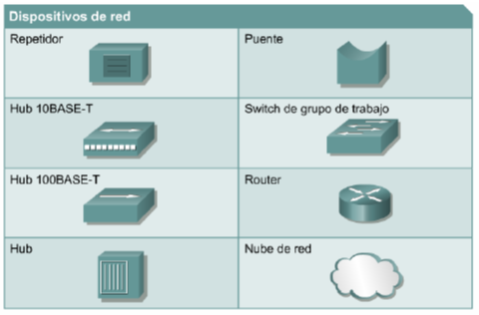
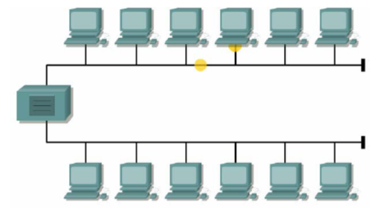
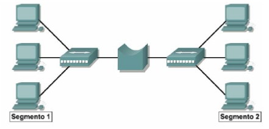
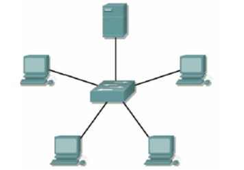
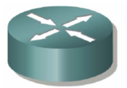

Dispositivos de Red (intermediarios)

- Un repetidor es un dispositivo de red que se utiliza para regenerar una señal.
Los repetidores regeneran señales analógicas o digitales que se distorsionan a causa de pérdidas en la transmisión producidas por la atenuación.
Un repetidor no toma decisiones inteligentes acerca del envío de paquetes como lo hace un router o puente

- Los hubs concentran las conexiones. En otras palabras, permiten que la red trate un grupo de hosts como si fuera una sola unidad. Esto sucede de manera pasiva, sin interferir en la transmisión de datos. Los hubs activos no sólo concentran hosts, sino que además regeneran señales.
- Los puentes convierten los formatos de transmisión de datos de la red además de realizar la administración básica de la transmisión de datos. Los puentes, tal como su nombre lo indica, proporcionan las conexiones entre LAN. Los puentes no sólo conectan las LAN, sino que además verifican los datos para determinar si les corresponde o no cruzar el puente. Esto aumenta la eficiencia de cada parte de la red.

- Los switches de grupos de trabajo agregan inteligencia a la administración de transferencia de datos. No sólo son capaces de determinar si los datos deben permanecer o no en una LAN, sino que pueden transferir los datos únicamente a la conexión que necesita esos datos. Otra diferencia entre un puente y un switch es que un switch no convierte formatos de transmisión de datos.

- Los routers poseen todas las capacidades indicadas arriba. Los routers pueden regenerar señales, concentrar múltiples conexiones, convertir formatos de transmisión de datos, y manejar transferencias de datos. También pueden conectarse a una WAN, lo que les permite conectar LAN que se encuentran separadas por grandes distancias. Ninguno de los demás dispositivos puede proporcionar este tipo de conexión.

BÚSQUEDAS RELACIONADAS
Topologia Fisica de Red
Protocolos de Red